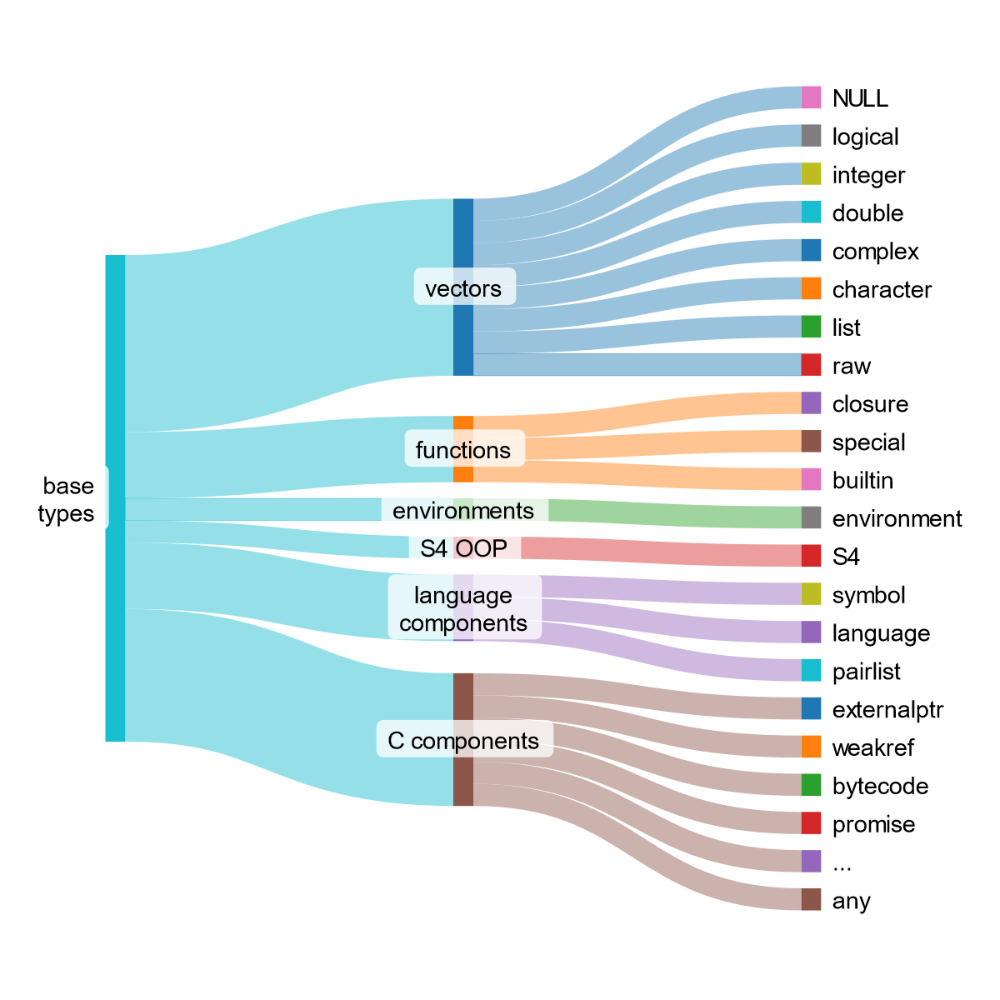

Intro to OOP and base types
Learning objectives:
- Understand what OOP means–at the very least for R
- Know how to discern an object’s nature–base or OO–and type
John Chambers, creator of S programming language
Session Info
#> R version 4.5.1 (2025-06-13)
#> Platform: aarch64-apple-darwin20
#> Running under: macOS Sequoia 15.7.1
#>
#> Matrix products: default
#> BLAS: /Library/Frameworks/R.framework/Versions/4.5-arm64/Resources/lib/libRblas.0.dylib
#> LAPACK: /Library/Frameworks/R.framework/Versions/4.5-arm64/Resources/lib/libRlapack.dylib; LAPACK version 3.12.1
#>
#> locale:
#> [1] en_US.UTF-8/en_US.UTF-8/en_US.UTF-8/C/en_US.UTF-8/en_US.UTF-8
#>
#> time zone: Europe/London
#> tzcode source: internal
#>
#> attached base packages:
#> [1] stats graphics grDevices utils datasets methods base
#>
#> other attached packages:
#> [1] DiagrammeR_1.0.11
#>
#> loaded via a namespace (and not attached):
#> [1] digest_0.6.37 RColorBrewer_1.1-3 fastmap_1.2.0 xfun_0.53
#> [5] magrittr_2.0.4 glue_1.8.0 knitr_1.50 htmltools_0.5.8.1
#> [9] rmarkdown_2.30 cli_3.6.5 visNetwork_2.1.4 compiler_4.5.1
#> [13] tools_4.5.1 evaluate_1.0.5 yaml_2.3.10 rlang_1.1.6
#> [17] jsonlite_2.0.0 htmlwidgets_1.6.4Why OOP is hard in R
- Multiple OOP systems exist: S3, R6, S4, and (now/soon) S7.
- Multiple preferences: some users prefer one system; others, another.
- R’s OOP systems are different enough that prior OOP experience may not transfer well.

Object Oriented Programming (OOP)
OOP: Big Idea - Polymorphism
Function has a single interface (outside), but contains (inside) several class-specific implementations.
# imagine a function with object x as an argument
# from the outside, users interact with the same function
# but inside the function, there are provisions to deal with objects of different classes
some_function <- function(x) {
if is.numeric(x) {
# implementation for numeric x
} else if is.character(x) {
# implementation for character x
} ...
}OOP: Big Idea - Polymorphism example
#> species island bill_length_mm bill_depth_mm
#> Adelie :152 Biscoe :168 Min. :32.10 Min. :13.10
#> Chinstrap: 68 Dream :124 1st Qu.:39.23 1st Qu.:15.60
#> Gentoo :124 Torgersen: 52 Median :44.45 Median :17.30
#> Mean :43.92 Mean :17.15
#> 3rd Qu.:48.50 3rd Qu.:18.70
#> Max. :59.60 Max. :21.50
#> NA's :2 NA's :2OOP: Big Idea - Polymorphism example
#>
#> Call:
#> lm(formula = mpg ~ hp, data = mtcars)
#>
#> Residuals:
#> Min 1Q Median 3Q Max
#> -5.7121 -2.1122 -0.8854 1.5819 8.2360
#>
#> Coefficients:
#> Estimate Std. Error t value Pr(>|t|)
#> (Intercept) 30.09886 1.63392 18.421 < 2e-16 ***
#> hp -0.06823 0.01012 -6.742 1.79e-07 ***
#> ---
#> Signif. codes: 0 '***' 0.001 '**' 0.01 '*' 0.05 '.' 0.1 ' ' 1
#>
#> Residual standard error: 3.863 on 30 degrees of freedom
#> Multiple R-squared: 0.6024, Adjusted R-squared: 0.5892
#> F-statistic: 45.46 on 1 and 30 DF, p-value: 1.788e-07OOP: Big Idea - Encapsulation
- Encapsulation. Function “encapsulates”–that is, encloses in an inviolate capsule–both data and how it acts on data. The user doesn’t need to worry about details of an object because they are encapsulated behind a standard interface.
REST API comparison
Think of a REST API: a client interacts with with an API only through a set of discrete endpoints (i.e., things to get or set), but the server does not otherwise give access to its internal workings or state. Like with an API, this creates a separation of concerns: OOP functions take inputs and yield results; users only consume those results.Objects have class
- Class defines:
- Method (i.e., what can be done with object)
- Fields (i.e., data that defines an instance of the class)
- Objects are an instance of a class
A class defines what an object is and methods describe what that object can do.
Class is inherited
- Class is defined:
- By an object’s class (e.g., ordered factor)
- By the parent of the object’s class (e.g., factor)
- Inheritance matters for method dispatch
- If a method is defined for an object’s class, use that method
- If an object doesn’t have a method, use the method of the parent class
- The process of finding a method, is called dispatch
OOP in R
OOP in R: Two Paradigms
1. Encapsulated OOP
- Methods belong to objects or classes
- Method calls typically look like
object.method(arg1, arg2)
- Calls communicate encapsulation, since form follows function
- Form:
object.method(arg1, arg2) - Function: for
object, applymethodforobject’s class with argumentsarg1andarg2
- Form:
OOP in R: Two Paradigms
2. Functional OOP
- Methods belong to “generic” functions
- From the outside, look like regular functions:
generic(object, arg2, arg3) - From the inside, components are also functions
Concept Map
Functional OOP in base R
- Paradigm: functional OOP
- Noteworthy: R’s first OOP system
- Use case: low-cost solution for common problems
- Downsides: no guarantees
- Paradigm: functional OOP
- Noteworthy: rewrite of S3, used by
Bioconductor - Use case: “more guarantees and greater encapsulation” than S3
- Downsides: higher setup cost than S3
Encapsulated OOP in base R
- RC
- Paradigm: encapsulated OOP
- Noteworthy: special type of S4 object is mutable–in other words, that can be modified in place (instead of R’s usual copy-on-modify behavior)
- Use cases: problems that are hard to tackle with functional OOP (in S3 and S4)
- Downsides: harder to reason about (because of modify-in-place logic)
OOP in packages (various paradigms)
- Paradigm: encapsulated OOP
- Noteworthy: resolves issues with RC
- Paradigm: functional OOP
- Noteworthy:
- best parts of S3 and S4 - ease of S3 with power of S4
- Recently adopted in
ggplot2 >= v4.0.0 - See more in rstudio::conf(2022) talk and the S7 website
- Longer-term plan to incorporate into base R
- Paradigm: prototype OOP
- Noteworthy: OOP style used in
ggplot2 < v4.0.0.
- Paradigm: hybrid functional and encapsulated (?)
sloop R package
“Sail the seas of OOP”
- S Language Object-Oriented Programming
Use sloop::otype to determine OOP system
Base types
Everything is an object, but not everything is object oriented

base objects and OO objects are different subsets of objects
You can use functions to determine if object is base or OOP
base::is.object(): TRUE/FALSE for OOPsloop::otype(): gives object type:"base","S3", etc.
OO objects have a “class” attribute, base objects do not
Be careful with class()
class() gives misleading results for base objects.
It is not enough to call class() on an object to determine if it is base or OO, as this will return the implicit class (rather than NULL) when there is no class attribute (i.e. "matrix", "array", "function", "numeric" or result of typeof()):
sloop::s3_class() is safer, as it returns the implicit class that the S3 and S4 systems will use to pick methods
What about types?
Only OO objects have a “class” attribute, but every object–whether base or OO–has a base type
There are 25 types.
They are most important in C code, so often see them called by their C type names, e.g. NILSXP for NULL.
Type examples
Concept Map
Base types in R
Sankey graph code
The graph above was made with SankeyMATIC
// toggle "Show Values"
// set Default Flow Colors from "each flow's Source"
base\ntypes [8] vectors
base\ntypes [3] functions
base\ntypes [1] environments
base\ntypes [1] S4 OOP
base\ntypes [3] language\ncomponents
base\ntypes [6] C components
vectors [1] NULL
vectors [1] logical
vectors [1] integer
vectors [1] double
vectors [1] complex
vectors [1] character
vectors [1] list
vectors [1] raw
functions [1] closure
functions [1] special
functions [1] builtin
environments [1] environment
S4 OOP [1] S4
language\ncomponents [1] symbol
language\ncomponents [1] language
language\ncomponents [1] pairlist
C components [1] externalptr
C components [1] weakref
C components [1] bytecode
C components [1] promise
C components [1] ...
C components [1] anyBe careful about the numeric type
R uses “numeric” to mean three slightly different things:
Alias for double
In S3 and S4, as shorthand for integer or double
is.numeric()tests for objects that behave like numbers
Advanced R consistently uses numeric to mean an object of type integer or double.
1: “numeric” is treated as synonymous for double
2: in S3 and S4
“numeric” is taken as either integer or double, and used when choosing methods: